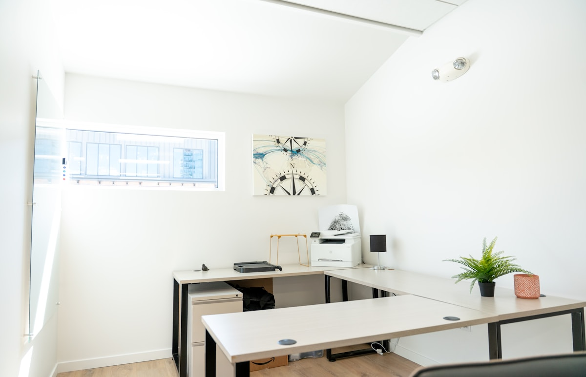

Ponad 20 lat doświadczenia
Praktyczna wiedza budowana od 2006 roku.
Monika Glonek | Omega MG
Za każdą firmą stoi człowiek. Dlatego w księgowości równie ważne jak liczby są dla mnie zaufanie, rozmowa i odpowiedzialność.
Nazywam się Monika Glonek. Z księgowością jestem związana od 2006 roku, a od 2008 roku pracuję jako główna księgowa. Doświadczenie zdobyte przez te lata wykorzystuję dziś w Biurze Rachunkowym Omega MG.
Łączę praktykę w prowadzeniu pełnej księgowości i sprawozdawczości z wiedzą z zakresu prawa, podatków i zarządzania. Pomagam przedsiębiorcom rozumieć liczby i podejmować świadome decyzje.
Stawiam na bezpośredni kontakt i jasne ustalenia. Chcę, abyś wiedział, kto zajmuje się Twoimi rozliczeniami, i mógł spokojnie skupić się na prowadzeniu firmy.
Obsługa stacjonarna w Jaworznie oraz online na terenie całej Polski.
Praktyczna wiedza budowana od 2006 roku.
Odpowiedzialność za księgi i sprawozdawczość.
Uprawnienia potwierdzone certyfikatem nr 54701/2012.
Szersze spojrzenie na finanse Twojej firmy.
01 / Doświadczenie
Od pierwszych rozliczeń po odpowiedzialność za pełną księgowość i pracę zespołu.
Pracę w księgowości rozpoczęłam w 2006 roku. Dwa lata później objęłam stanowisko głównej księgowej. To doświadczenie nauczyło mnie patrzeć na finanse całościowo, z uwzględnieniem codziennych potrzeb organizacji.
W mojej drodze zawodowej ważne miejsce zajmuje praca w Krakowskim Instytucie Łukasiewicz. Zajmowałam się księgowością i zarządzaniem zespołem księgowych, łącząc odpowiedzialność za rozliczenia z organizacją pracy.
Kolejne lata to rozwijanie wiedzy i umiejętności. Dziś przenoszę te doświadczenia do Omega MG, gdzie wspieram przedsiębiorców w uporządkowaniu księgowości i lepszym rozumieniu finansów ich firm.
Pierwsze doświadczenia i budowanie praktycznych podstaw zawodu.
Pełna księgowość, sprawozdawczość i odpowiedzialność za rozliczenia.
Uzyskanie certyfikatu nr 54701/2012.
Rozwój kwalifikacji i doświadczenie w prowadzeniu zespołu księgowych.
Własne biuro oparte na wiedzy, odpowiedzialności i bezpośrednim kontakcie.
02 / Kwalifikacje
Księgowość wymaga wiedzy, którą stale trzeba rozwijać. Łączę perspektywę finansową, prawną i zarządczą, aby lepiej rozumieć wyzwania przedsiębiorców.
Wiedza z zakresu rachunkowości jest podstawą mojej pracy z księgami, sprawozdaniami finansowymi i analizą danych.
Łączę znajomość zagadnień prawnych i podatkowych z praktyką rozliczeń. Śledzę zmiany, które mają znaczenie dla obsługiwanych firm.
Wykształcenie MBA w Szkole Głównej Handlowej w Warszawie poszerza moje spojrzenie na organizację, finanse i decyzje biznesowe.
MBA · Szkoła Główna HandlowaPosiadam Certyfikat Księgowy nr 54701/2012. Wiedzę zawodową rozwijam, łącząc doskonalenie kwalifikacji z codzienną praktyką.
Certyfikat nr 54701/201203 / Specjalizacje
Od bieżących rozliczeń po spojrzenie na wynik finansowy. Pomagam uporządkować obowiązki i zrozumieć, co liczby mówią o Twojej firmie.
Prowadzę pełną księgowość, dbając o porządek w dokumentach i rzetelne ujęcie operacji gospodarczych.
Przygotowuję sprawozdania i pomagam odczytać informacje o sytuacji finansowej firmy.
Zajmuję się bieżącymi rozliczeniami podatkowymi i pilnuję terminów związanych z obsługą księgową.
Pomagam przyjrzeć się kosztom i wynikom, aby decyzje biznesowe miały oparcie w danych.
Wspieram firmy w rozliczaniu wynagrodzeń i prowadzeniu dokumentacji związanej z zatrudnieniem.
Porządkuję obieg dokumentów i sposób pracy, tak aby księgowość sprawnie wspierała działalność.
04 / Jak pracuję
Dobra współpraca zaczyna się od jasnych zasad. Chcę, żebyś czuł się spokojnie ze swoją księgowością i wiedział, że możesz po prostu zapytać.
Uważnie sprawdzam dokumenty i dbam o szczegóły. Zależy mi na tym, aby rozliczenia były uporządkowane i terminowe.
Traktuję powierzone sprawy z należytą starannością. Dbam o poufność informacji i jasno określam zakres swojej pracy.
Patrzę na księgowość przez pryzmat codziennych potrzeb firmy. Szukam rozwiązań, które pomagają w jej prowadzeniu.
Stawiam na kontakt i rozmowę. Wiesz, z kim omawiasz swoje rozliczenia i do kogo zwrócić się z pytaniem.
Wyjaśniam sprawy księgowe prostym językiem. Zależy mi, abyś rozumiał swoje obowiązki i informacje o finansach firmy.
Poznaję sposób działania Twojej firmy. Zakres obsługi i organizację współpracy dopasowuję do jej potrzeb.
05 / Dlaczego powstało Omega MG
Chciałam stworzyć biuro, w którym za obsługą księgową stoi konkretna osoba i partnerska relacja.
Omega MG łączy moje doświadczenie zawodowe z podejściem do pracy, które jest mi bliskie: uważnością, odpowiedzialnością i otwartą rozmową.
Wiem, że prowadzenie firmy oznacza wiele decyzji i obowiązków. Dlatego zależy mi na księgowości, która daje porządek, zrozumiałe informacje i możliwość bezpośredniego kontaktu.

06 / Po godzinach
Poza księgowością jest też czas na bliskich, nowe miejsca i dobrą książkę.
Rodzina jest dla mnie ważna. Lubię dobrą organizację, która pomaga znaleźć przestrzeń zarówno na obowiązki, jak i na wspólnie spędzany czas.
Podróże pozwalają mi zmienić perspektywę i oderwać się od codziennego rytmu. Cenię poznawanie nowych miejsc i chwile, w których można po prostu zwolnić.
Chętnie sięgam też po książki. To dla mnie sposób na odpoczynek, inspirację i spojrzenie na świat z innej strony.
Omega MG · Jaworzno i online
Opowiedz mi o swojej działalności. Wspólnie ustalimy, jakiej obsługi potrzebujesz i jak mogę Ci pomóc. Możesz zacząć od orientacyjnej wyceny lub poznania zakresu usług.
Skontaktuj się ze mną